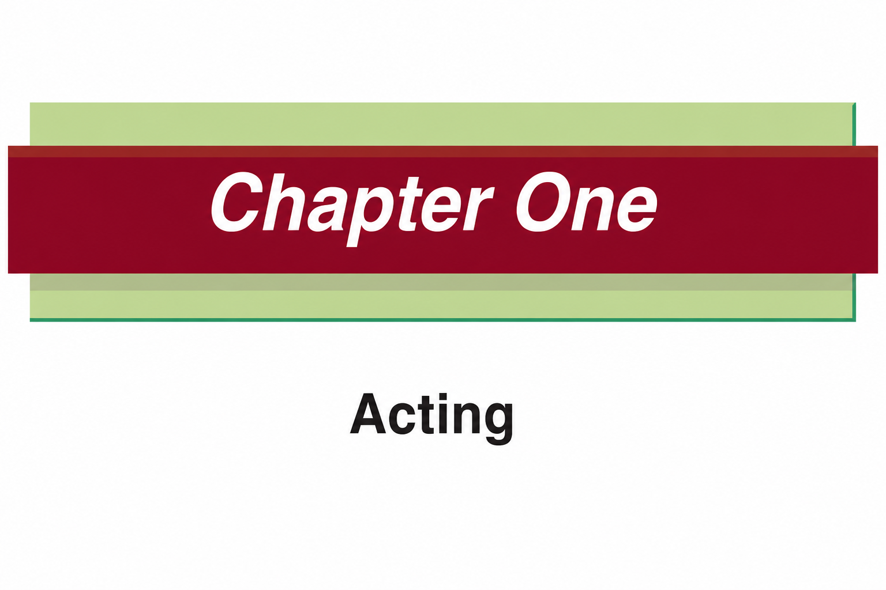

Chapter One
Acting is one of the elements in the performing arts that conveys messages to society using words and actions.
In this chapter, you will learn how to practise body movements, emotions, and sounds to act out living and non-living things.
The competencies developed will enable you to perform various plays to educate and entertain the community skilfully and confidently.

Think
Body movements in acting
Acting practices
Acting practices include the preparation of various physical and mental techniques.
An actor prepares him or herself to develop and understand the behaviour and feelings of the role of the character he or she has to assume in a play.
This makes the acting even better.
Acting practices include body movements, acting various emotions and voice projection.
Body movement practices in acting
Body movements in acting are the way an actor uses his or her body to convey messages without words.
Body movements are also referred to as body language.
Body movements include mime, gestures,